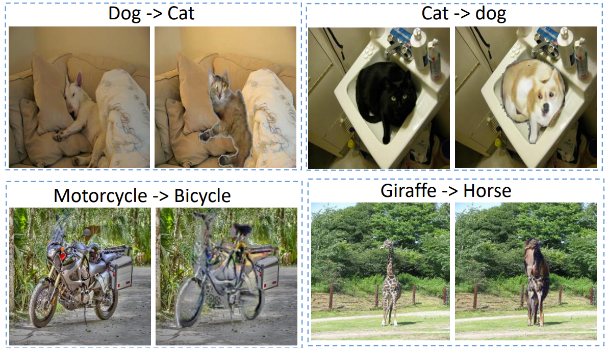

Ph.D. Student
The Robotics Institute
School of Computer Science
Carnegie Mellon University
Pittsburgh, PA 15213, USA
Email: hao AT cs.cmu.edu

Email: hao AT cs.cmu.edu
I am currently a Ph.D. student in the Robotics Institute, Carnegie Mellon University. My advisor is Prof. Eric Xing. I received the M.S. degree from Computer Science and Engineer Department in Shanghai Jiao Tong University in 2014. Before that, I completed my Bachelor's degree from 2008 to 2011 at South China University of Technology, majoring in Computer Science.
My research interest is in scalable and structured machine learning, deep learning, and their applications in computer vision and natural lauguage processing. I (co-)design models, algorithms and systems to enable machine learning to be applied/delopyed on larger-scale problems and applications. I also briefly worked on machine learning for medical brain computer interface.
Entrepreneurship:

|
Cavs: A Vertex-centric Programming Interface for Dynamic Neural Networks
AISys@SOSP 2017, MLSys@NIPS 2017
|
|  |
Generative Semantic Manipulation with Contrasting GAN
arXiv preprint, 2017
|

|
Structured Generative Adversarial Networks
NIPS 2017
|

|
Poseidon: An Efficient Communication Architecture for Distributed Deep Learning on GPU Clusters
ATC 2017 (Oral)
|

|
Recurrent Topic-Transition GAN for Visual Paragraph Generation
ICCV 2017
|

|
SCAN: Structure Correcting Adversarial Network for Chest X-rays Organ Segmentation
arXiv preprint, 2017
|

|
ZM-Net: Real-time Zero-shot Image Manipulation Network
arXiv preprint, 2017
|

|
Poseidon: A System Architecture for Efficient GPU-based Deep Learning on Multiple Machines
ATC 2016 (Poster), MLSys Workeshop@ICML 2016 (Spotlight)
|

|
Learning Concept Taxonomies from Multi-modal Data
ACL 2016 (Oral)
|

|
GeePS: Scalable Deep Learning on Distributed GPUs with a GPU-specialized Parameter Server
EuroSys 2016
|

|
Combining the Best of Convolutional Layers and Recurrent Layers: A Hybrid Network for Semantic Segmentation
arXiv preprint, 2016
|

|
Automatic Photo Adjustment Using Deep Learning
TOG Vol.35 No.2, ICCP 2016 (Invited Poster)
|

|
On the Reducibility of Submodular Functions
AISTATS 2016
|

|
HD-CNN: Hierarchical Deep Convolutional Neural Network for Large Scale Visual Recognition
ICCV 2015
|

|
Dynamic Topic Modeling for Monitoring Market Competition from Online Text and Image Data
KDD 2015 (Oral)
|

|
A Boosting-based Spatial-Spectral Model for Stroke Patients' EEG Analysis in Rehabilitation Training
(* indicates equal contribution)
ECAI 2014, IEEE TNSRE 2015
|

|
Gaussian Mixture Modeling in Stroke Patients' Rehabilitation EEG Data Analysis
EMBC 2013
|

|
A Tensor-Based Scheme for Stroke Patients' Motor Imagery EEG Analysis in BCI-FES Rehabilitation Training
EMBC 2013, JNM 2013
|